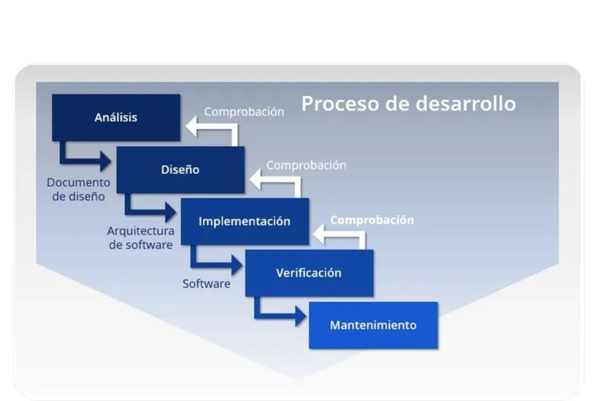

La metodología en cascada es un modelo de desarrollo de software que organiza el proyecto en diferentes etapas secuenciales. Esto significa que cada fase debe completarse antes de iniciar la siguiente, siguiendo un orden estructurado y planificado.
Esta metodología es utilizada en proyectos donde los requerimientos están claramente definidos desde el inicio y no suelen cambiar durante el desarrollo del sistema.
